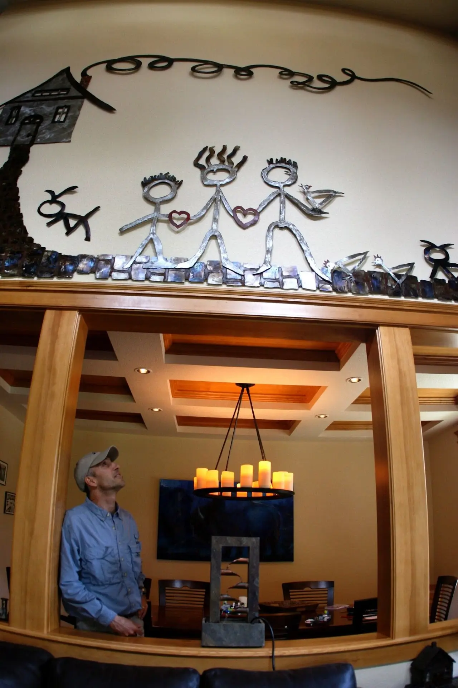
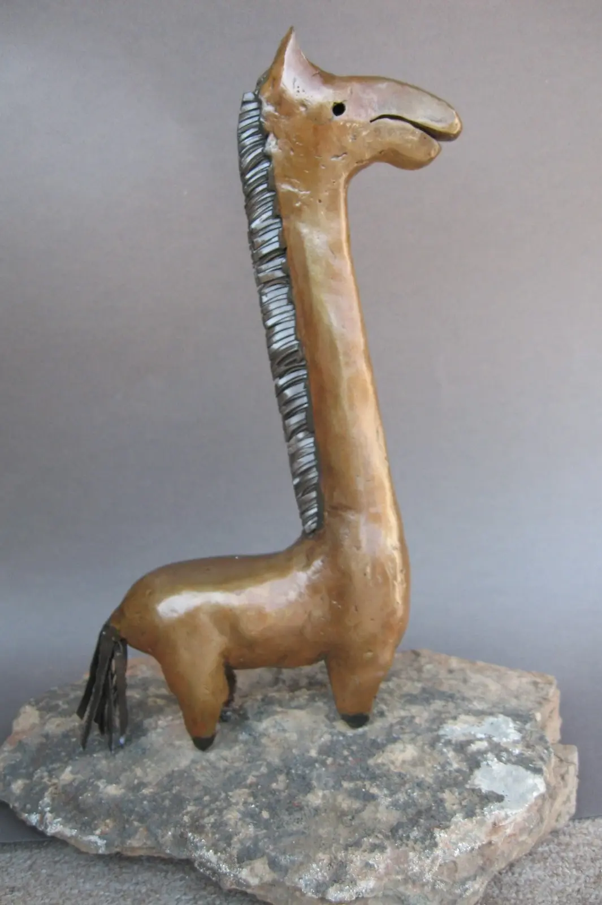
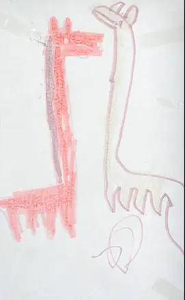
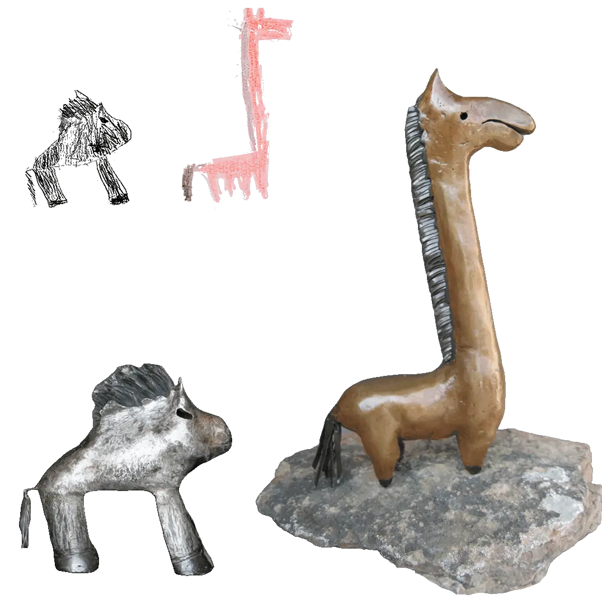
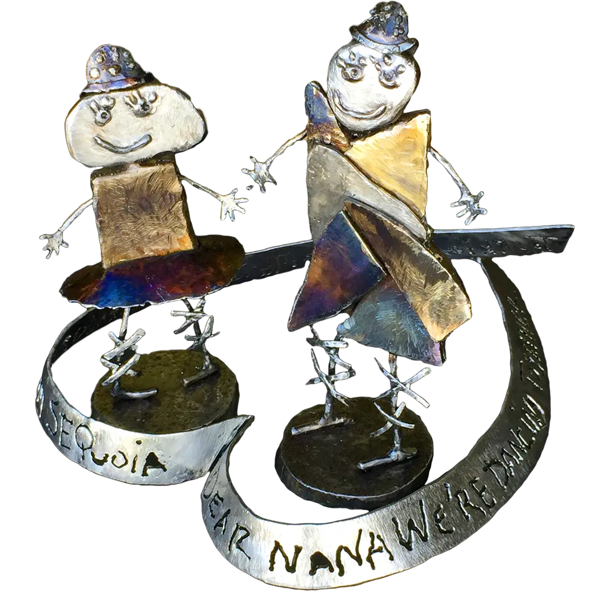
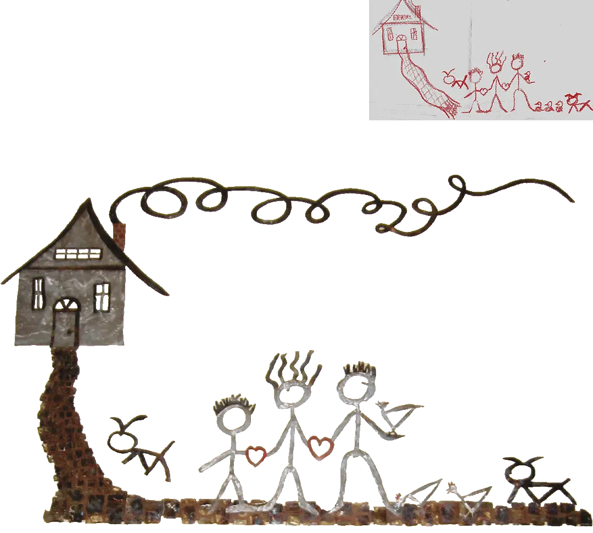
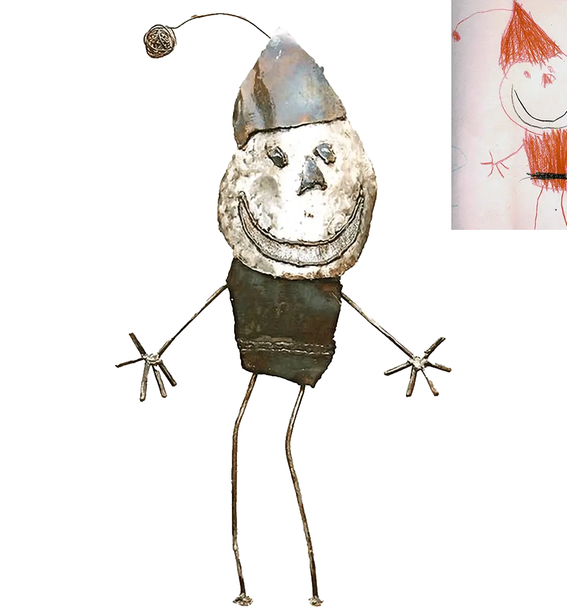
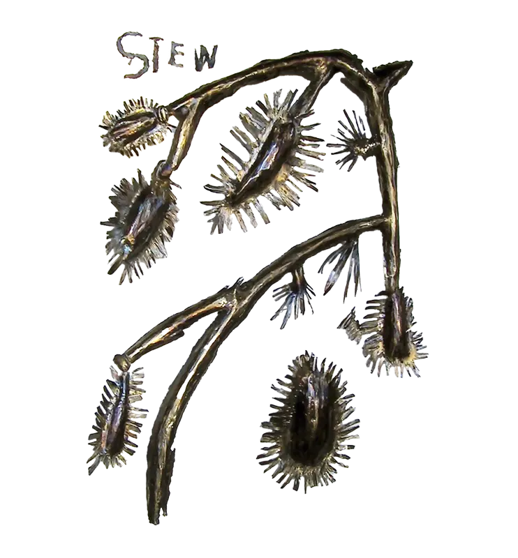

2004 - 2019
In my "Something to Say" series, I transform children’s artwork and messages into whimsical steel sculptures that celebrate the purity and humor of their creations. Initially inspired by the drawings and notes my children shared with my wife and me, we began incorporating these heartfelt works into our garden, where they continue to bring joy and reflection. I now collaborate with other families, turning their children's “refrigerator art” or treasured sketches into lasting sculptures, allowing them to interact with these memories daily.




2007 (#1: 5"x8"x3" And #2: 8"x12"x3")
Formed Steel
Commission

2019 (Figure #1: 7"x3"x2" And Figure #2: 9"x3"x2")
Commission

2004 (46"x22"x22")
Formed Steel
NFS

2009 (12'x9'x1")
Heat Colored Steel
Commission

2006 (30"x14"x14")
Heat Colored Steel
NFS

2005 (20"x24"x1.5")
Formed/Heat Colored Steel
Commission